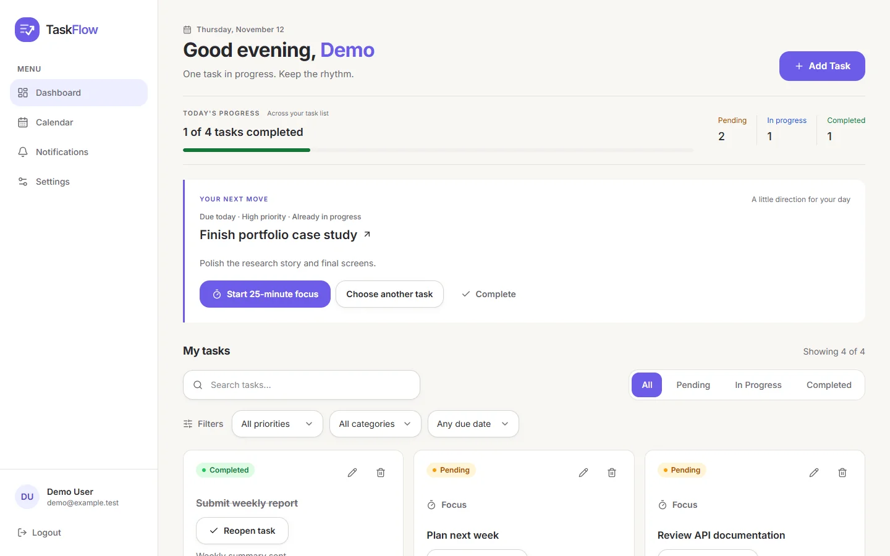
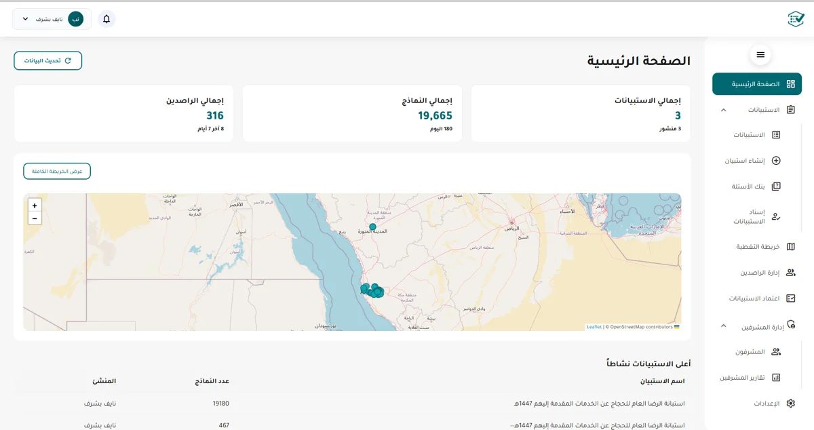
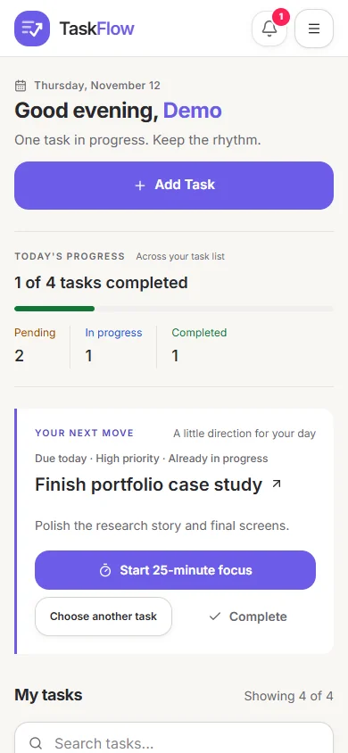
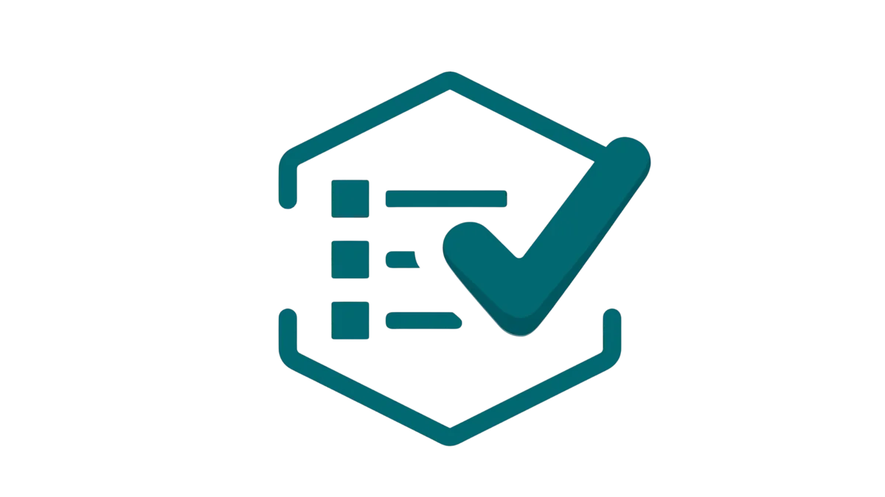
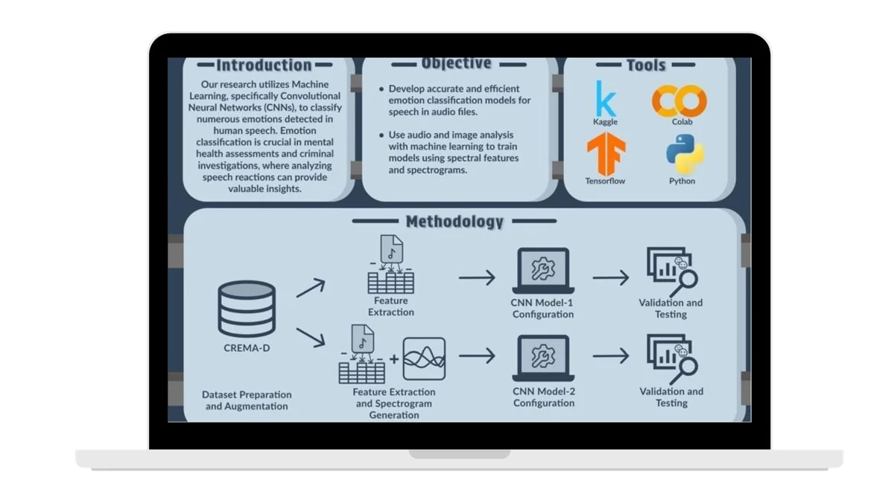
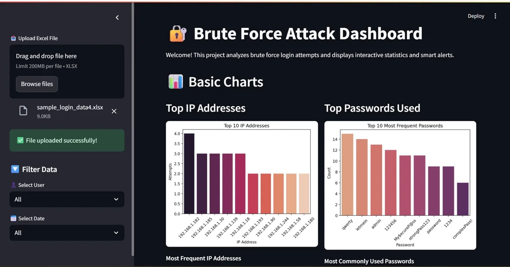
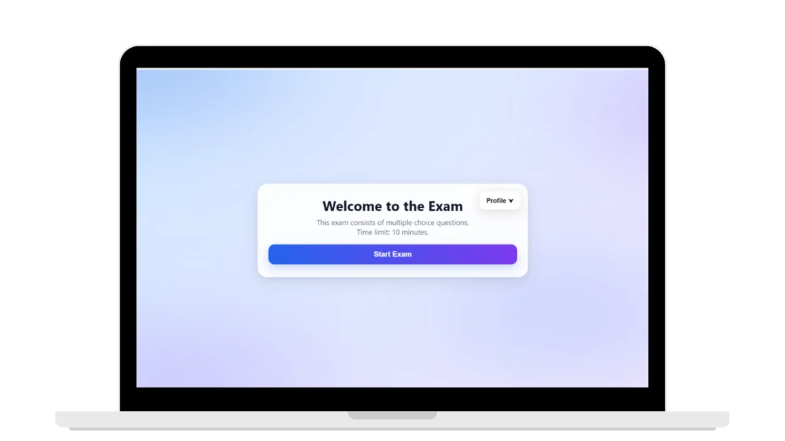
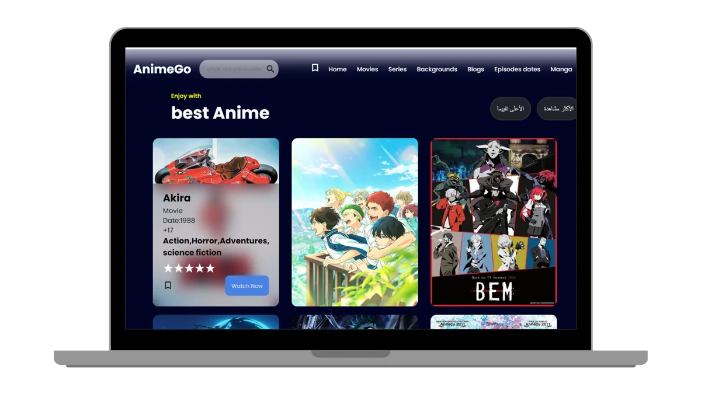
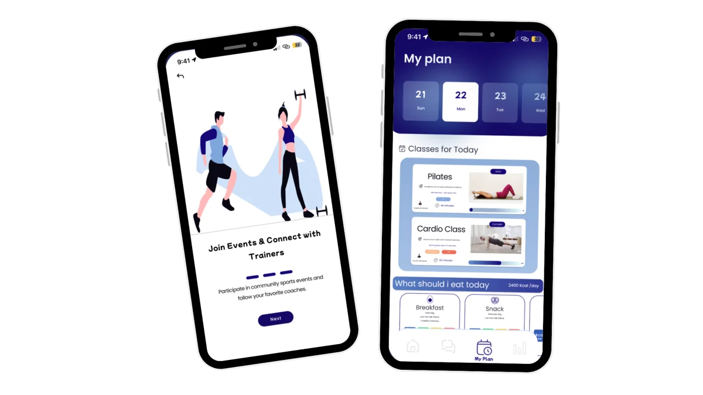

فهم الاحتياج
ملاحظتانتقودان إلى احتياج واحد.
مرحبًا، أنا منال
مهندسة برمجيات Full‑Stack

Saden / 02
أبني بعناية، من الفكرة إلى الأثر.عنّي
ملاحظتانتقودان إلى احتياج واحد.
أجعل الخطوة التالية واضحة للمستخدم.
مشروعان مميزان

منتج لإدارة المهام والإنتاجية، مع مصادقة JWT ومهام آمنة ومنفصلة لكل مستخدم. طوّرته من الواجهة إلى الـAPI وقاعدة البيانات.
بُني خلال تدريب AppRo8، وهو منشور ومتاح للتجربة.

منصة ويب وجوال وBackend وقاعدة بيانات لجمع بيانات الدراسات الميدانية. تشمل الاستبيانات والفرق والأدوار والصلاحيات، وتحديد المواقع والمزامنة دون اتصال وتحليل البيانات في لوحة مركزية. استُخدمت فعليًا في العمليات الميدانية خلال موسم الحج 2026.
مشاريع أخرى

بحث لتصنيف المشاعر من الصوت باستخدام تعلم الآلة ونماذج CNN وتحليل الخصائص الصوتية على مجموعة بيانات CREMA-D.
متوسط الدقة: 96.9%
عرض الورقة البحثية
لوحة تفاعلية لتحليل محاولات تسجيل الدخول وكشف أنماط الهجمات بصريًا.
زيارة المشروع قد يستغرق تشغيل المشروع لحظات. GitHub
منصة اختبارات إلكترونية للطلاب والمشرفين، مع اختبارات مؤقتة ولوحة إدارة.
GitHub

تصميم تجربة تطبيق يساعد المستخدمين على إيجاد الأنشطة والمراكز الرياضية بسهولة.
Figma prototypeالخبرات والتدريب
AppRo8
تدريب قائم على المشاريع · مهمتان عمليتان
بناء Task Management REST API باستخدام Node.js وExpress وMongoDB وMongoose، مع مصادقة JWT وتوثيق Swagger/OpenAPI والتحقق من المدخلات ومعالجة الأخطاء. نشر الـAPI على Render.
GitHubتحويل المتطلبات إلى واجهات React وTypeScript متجاوبة: لوحة تحكم وإدارة مهام وفلاتر وتجربة هاتف محسّنة. تطوير TaskFlow إلى منتج Full-Stack مكتمل، مع الاختبارات والتوثيق والنشر على Vercel.
TaskFlow ↓ما تعلمته وطبّقتهربط API موثّق بواجهة متجاوبة، ثم اختبار المنتج ونشره.
Institute of Hajj and Umrah Research – Umm Al-Qura University
ساهمت في تطوير أنظمة وحلول رقمية متكاملة شملت الواجهات والـBackend وقواعد البيانات، وفي بناء منصة سادن لجمع وإدارة بيانات الدراسات الميدانية، إلى جانب الاختبار وتحسين الأداء وتجربة المستخدم.
ما تعلمته وطبّقته بناء نظام يجمع الويب والجوال والبيانات لخدمة فرق ميدانية فعلية.
شاهد سادنDigital Upgrade ME
ساهمت في تطوير واختبار تطبيقات ويب باستخدام HTML وCSS وJavaScript وPython وPHP، والعمل على الواجهات والـBackend، مع استخدام Git وGitHub والعمل ضمن بيئة Agile.
ما تعلمته وطبّقته تطوير واختبار جماعي ضمن بيئة Agile.
Newtech Technical Challenge
تدريب مكثف في تصميم تجربة وواجهة المستخدم، شمل أبحاث تجربة المستخدم، وتصميم الواجهات، وبناء النماذج الأولية، وتطبيق منهجيات التصميم المتمحور حول المستخدم.
ما تعلمته وطبّقته قرارات تصميم تبدأ من البحث وتنتهي بنموذج قابل للتجربة.
Al-Khobar Experts Training Institute
تدريب عملي مكثف في تطوير الويب Full-Stack، شمل بناء واجهات متجاوبة باستخدام HTML وCSS وJavaScript وBootstrap وتطوير مشاريع تطبيقية.
ما تعلمته وطبّقته ترجمة الأساسيات إلى واجهات ومشاريع ويب عملية.
أدواتي التقنية
أحدد الاحتياج وأصمم الفكرة الأولى.
أحوّل التصميم إلى واجهة متفاعلة.
أوصل الواجهة بالخدمات وقواعد البيانات.
أحلل البيانات وأبني النماذج.
أفحص التغييرات وأجهزها للنشر.
ممارسات عملية ترافقني خلال بناء المنتج.